自己紹介
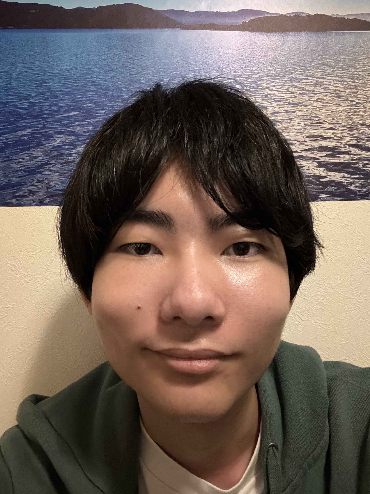
名前： 奥田 悠人(オクダ ハルト)
担当： プログラマー
趣味： 音楽鑑賞、簡単な料理
使用可能ツール
現在制作中の卒業作品
GunKid
3Dシューティングゲーム｜個人制作
- カメラ制御：プレイヤーが見えなくならないよう、周囲のオブジェクトとの距離に応じて表示を制御。
- 状況に応じたボスAI：戦闘状況に合わせてボスの行動を変化させるシステム。
- ターゲッティング：ボスや箱など、対象を狙うためのターゲッティング機能。
作品紹介
タグで絞り込む
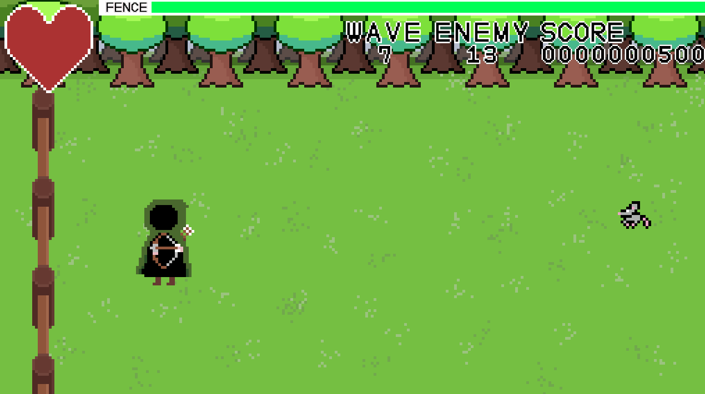
Archer's Guardian
Archer's Guardian
製作期間: 2024/5/1 ~ 2024/6/28
担当: 全て
1年次最初に製作したタワーディフェンス兼シューティングゲーム。
1フェーズに出てくる敵を全滅させればプレイヤーの能力を上げられ、5フェーズごとに特別な選択肢が現れるが、フェーズを進めるほど敵も強く多くなる。
特にプレイヤーの能力上昇の選択肢にはこだわっており、1文字1文字文字を自作して、char型でも日本語が使える文章描画用の関数を作っていた。
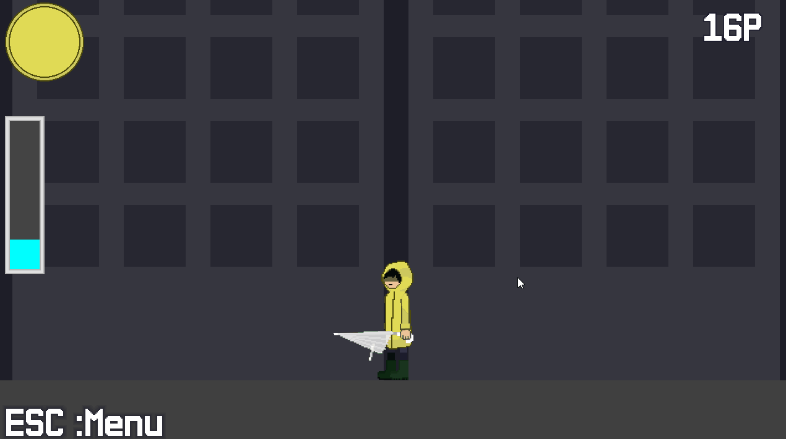
Rain Sword Man
Rain Sword Man
製作期間: 2024/8/7 ~ 2024/8/31
担当: 全て
1年次夏休み期間に制作したシューティングアクションゲーム。
武器の傘を剣として使って敵を切る・銃として使って敵を撃つ・開けば盾にして敵を寄せ付けない等を、使い分けて敵を倒し最終的に出てくるボスを倒す。やられたら敵を倒した時に得られるポイントでプレイヤーを強化していく。
特にプレイヤーをボーンで動かす事にこだわり、しっかりジョイントを回転させることでプレイヤーの動きを表現し、傘のボーンに合わせて攻撃判定を出している。
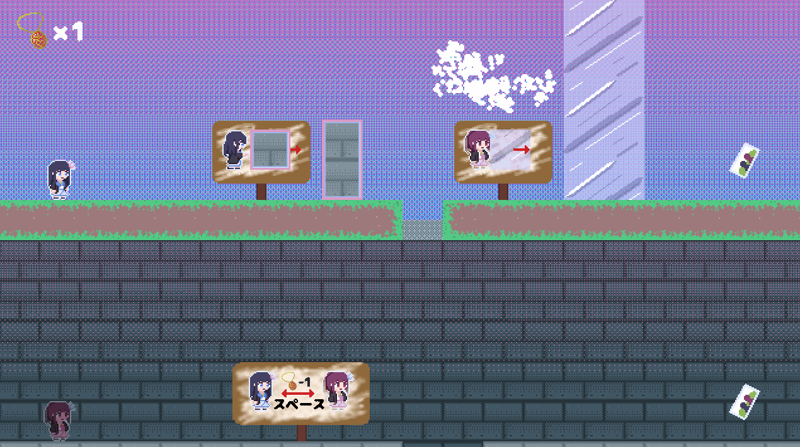
ドリームメモリー
ドリームメモリー
製作期間: 2024/9/4 ~ 2024/9/13
担当: プレイヤー・ギミックの動き、マップチップとの衝突判定等
1年次夏休み期間後に3人チーム、10日間で制作したパズルゲーム。
箱を押せる妹と、ガラスを通り抜けられる姉の特性を活かし、位置を入れ替える機能をうまく使って2人ともゴールに行けるように導く。
当時なりに動く床、押せる箱、通り抜けられるガラスのようなギミックがあってもプレイに支障をきたさない動きになるように努力した。
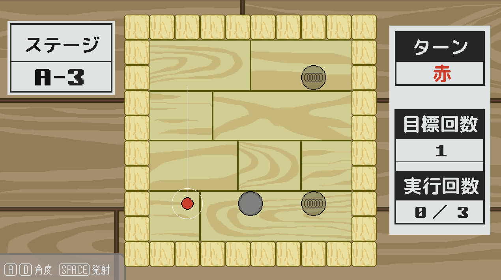
おはじきのきせき
おはじきのきせき
製作期間: 2024/9/30 ~ 2024/10/24
担当: ゲームシステム発案、オブジェクトとの衝突、反射判定、ステージ構想、衝突するオブジェクトスプライト制作等
1年次、年に3回あるチーム制作の1回目にて3人チームで制作したパズルゲーム。
おはじきを飛ばして、ぶつかると灯る電球を全て灯すのを2周行うとクリアだが、2周目では1周目の移動の軌跡が交差した部分がおはじきを反射するようになるので2回同じルートを通ることはやりにくくなっている。
親切さを意識しており、壁やオブジェクトに衝突する際、どの方向に反射するかを表示する予測線を真っ先に実装した。
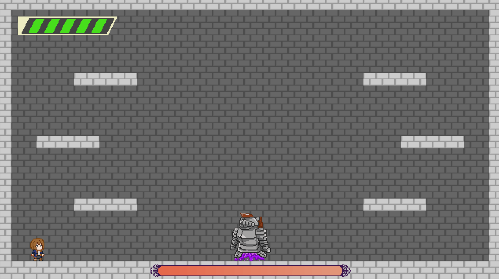
奪取の魔導士
奪取の魔導士
製作期間: 2024/10/28 ~ 2024/11/28
担当: ゲームシステム発案、ダッシュ可能時・攻撃・ボス体力減少演出、全オブジェクト衝突判定、ステージ制作・ボス行動等
1年次、年に3回あるチーム制作の2回目にて3人チームで制作したアクションゲーム。
ボスにダッシュで突撃して攻撃し、体力を削り切ればクリア。ボスの遠距離攻撃をダッシュで奪うことができ、次に攻撃する際に奪った遠距離攻撃で追加攻撃を行う。
ダッシュで奪う行動を、まったく行わない・取れそうな時だけ取る・出来るだけ貯めて一気に放つの、3つの層があると仮定し、そのどの層でもクリアできるかつ、活用した方が楽しくなる設計になるように努力した。

ビッグメン
ビッグメン
製作期間: 2024/12/2 ~ 2025/2/6
担当: プレイヤー・敵・ファン(プレイヤーの周囲を回る子機)の動き全般、パーティクル、エディター類、強化画面等
1年次、年に3回あるチーム制作の3回目にて3人チームで制作した見下ろし型のアクションゲーム。
プレイヤーの子機になるファンがマップに落ちており、そのままではプレイヤーの周囲を回りシールドになり、攻撃ボタンで振り回して遠くまで届く攻撃にもできる。レベルアップで攻撃力やファン所持数を上げたりできるだけでなく、一定値ごとにスケールアップしてより強大な敵が現れるようになる。
エディター製作をする際にこのゲームのスケールアップする特性に合わせて画面端基準での出現位置にしたり、実際にその位置に出現させてプレビューできるようにしたり、なるべくこのゲームに合わせた使いやすいエディターになるように制作していた。

マジックハンド
マジックハンド
製作期間: 2025/7/15 ~ 2025/8/28
担当: 全て
2年次夏休み期間に制作した3Dレールシューティングアクションゲーム。
プレイヤーではなく時期に横に子機である手から弾を発射する。手の形ごとに弾の発射角度などが変わる。マップ上に手が落ちているので拾って弾数も増やせる。
レールシューティングでも枝分かれした進行方向にできると考え、画面の左右どちら側にいるかを分かれ道の前に判定してルート変更を行っている。
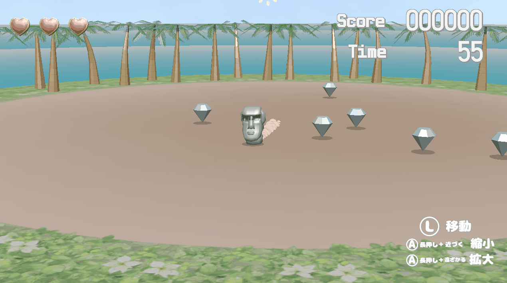
モアイズ
モアイズ
製作期間: 2025/9/1 ~ 2025/9/10
担当: モデル制作、パーティクル、演出、タイトル画面、HUD等
2年次夏休み期間後に4人チーム・10日間で制作した3D見下ろし視点のアクションゲーム
プレイヤーの目で見ながら近づくと視野の範囲のオブジェクトが縮小し、逆に離れると拡大するので、敵やダメージ床を拡大しないようにしながら、宝石を拡大してスコアを稼ぐ。
当時の技術ではパーティクルが半透明だとすべてのモデルの前に出すか、後方も透過したままになるかだったので、なるべく不透明でも何が起きてるかわかりやすいエフェクトに心がけた。

急降下カラス飛行
急降下カラス飛行
製作期間: 2025/9/30 ~ 2025/10/29
担当: 全モデル、チュートリアル、プレイヤー、スコア・コンボシステム等
2年次、年に3回あるチーム制作の1回目にて3人チームで制作した3Dランゲーム。
ワンボタンで無限にジャンプが可能で、長押しすると急降下。急降下で地面にいる敵に触れると急降下の始点まで飛び上がり衝撃波を発生させて敵を一掃する、敵を倒すほどコンボが積み重なりスコアが増えるが、敵の攻撃に当たるか着地するとコンボが途切れる。
シンプルな操作で爽快感を与えるため、無限に飛び上がれて高いほど衝撃範囲を広げて行ったが、それだと無限に飛ぶことを目的にしてしまうプレイヤーが現れるので上空に制限区域としてジャガイモの小惑星帯を作ることで対策した。
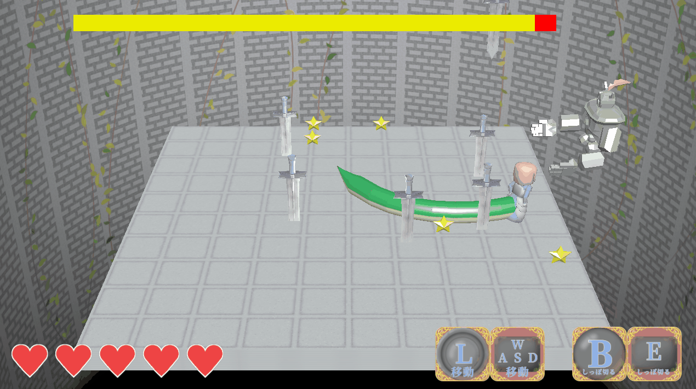
ぶんぶんている
ブンブンている
製作期間: 2025/10/30 ~ 2025/12/10
担当: ゲームシステム発案、エンジン、プレイヤー・尻尾挙動、ボス攻撃範囲システム、プレイヤーやポスのモーション全般等
2年次、年に3回あるチーム制作の2回目にて4人チームで制作した3D見下ろし視点アクションゲーム。
尻尾のあるプレイヤーをぐるぐる回すことで尻尾を振り回してそれをぶつけて攻撃するゲーム。ただし敵が降らせた剣に尻尾が当たってしまうと地面に尻尾が刺さって動かせなくなるので切って短くしなければならない。だが降らせ終わって地面にある剣は尻尾で破壊でき、破壊すると出現する星を集めて尻尾を伸ばすことができる。
尻尾はプレイヤーが動いていると曲がるが動いてなければ真っ直ぐに戻り、尻尾に1本剣が刺さっても刺さった場所を軸にしてぐるぐる回れ、2本刺さるとその場から動けなくなる等、尻尾のしなりのある動きにこだわった。
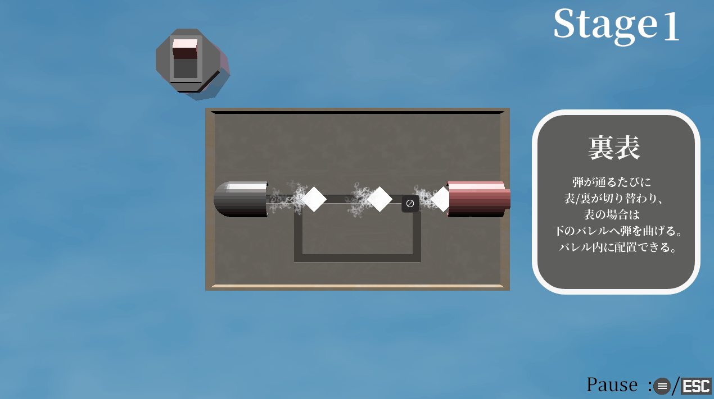
C.C.C
C.C.C
製作期間: 2026/1/8 ~ 2026/2/4
担当: ゲームシステム発案、エンジン、地形との接触判定、パーティクル、ポーズ画面等
2年次、年に3回あるチーム制作の3回目にて4人チームで制作した3DFPS視点シューティングゲーム。
銃を改造するフェーズとその銃で戦うフェーズがあり、銃の改造では弾が通るルートにモジュールをつけて分岐させたりして弾同士を銃の中でぶつけることで火力を上げられるが、弾数が減るので多数相手に戦いにくくなる。
銃が改造している感覚にこだわり、強くなるほど弾の色を変えたり、銃の改造で配置したモジュールと銃の中を通る弾がFPS視点でも見えるようにした。
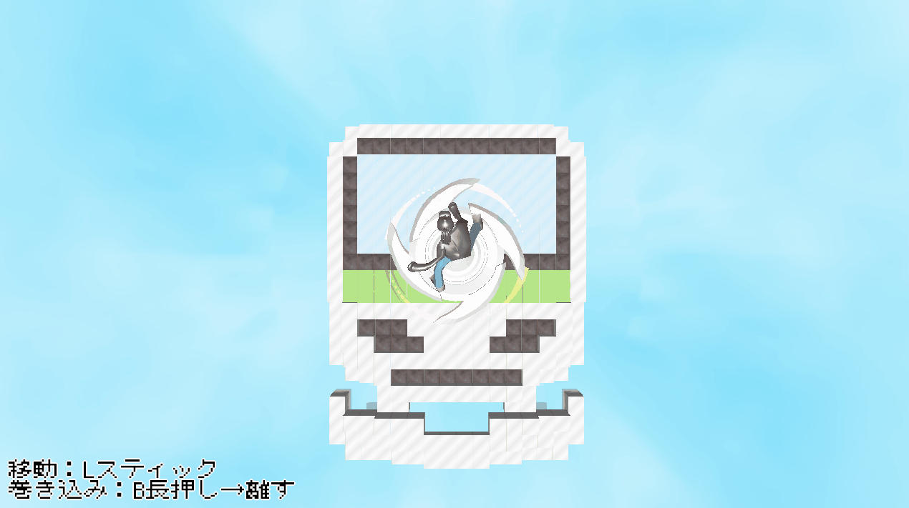
災Guy
災Guy
製作期間: 2026/2/20 ~ 2026/6/1
担当: エンジン、ボクセル描画・衝突判定、プレイヤー挙動、ゲームカメラ、タイトル画面、天球、エディター等
3年次、春休みから3人での4ヶ月制作にて制作した3Dアクションゲーム
落ちながらいろんなものになっているボクセルを力を溜めて駒を投げて竜巻を発生させて破壊するゲーム。
操作もルールもシンプルだが、ひたすら爽快感を得られるようにこだわり、竜巻で破壊するとボクセルが一回り小さいボクセルに分裂していって壊している感覚を得やすくしたり、最後に通ってきた道を見せて達成感を得られるようにした。
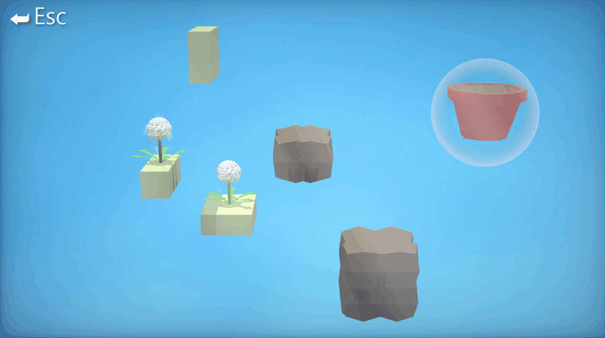
わたる
わたる
製作期間: 2026/8/31 ~ 2026/9/9
担当: タンポポの種の動き、タンポポの花の動きや根っこの出現、土、モデル等
3年次夏休み期間後に3人チーム・10日間で制作した3Dパズルゲーム
タンポポの種を植木鉢まで飛ばせばクリア。タンポポの種はもちろん土に着地すれば花が生え、種が花にぶつかると花が伸び、種が綿毛にぶつかると跳ねるため、これらを活用して植木鉢まで種を飛ばす。
できるだけ同じ土にタンポポをはやせないのを分かりやすくするために根っこを全体に生やすようにしました。

GunKid
GunKid
製作期間: 2025/9/22 ~ 現在
担当: 全て
2年次の後期に制作していた3Dシューティングゲームをブラッシュアップして現在制作しているゲーム。
シンプルなシューティングゲームの中に6発までしか撃てない弾、壁にぶつかるとスタンする回避など、シンプルだが考えて使わないといけないシステムにしています。
こういうプレイヤー視点のゲームではカメラがマップ上のオブジェクトと接近することが非常に多いため、接近したらオブジェクトを透過してプレイヤーがちゃんと見えるようにしています。